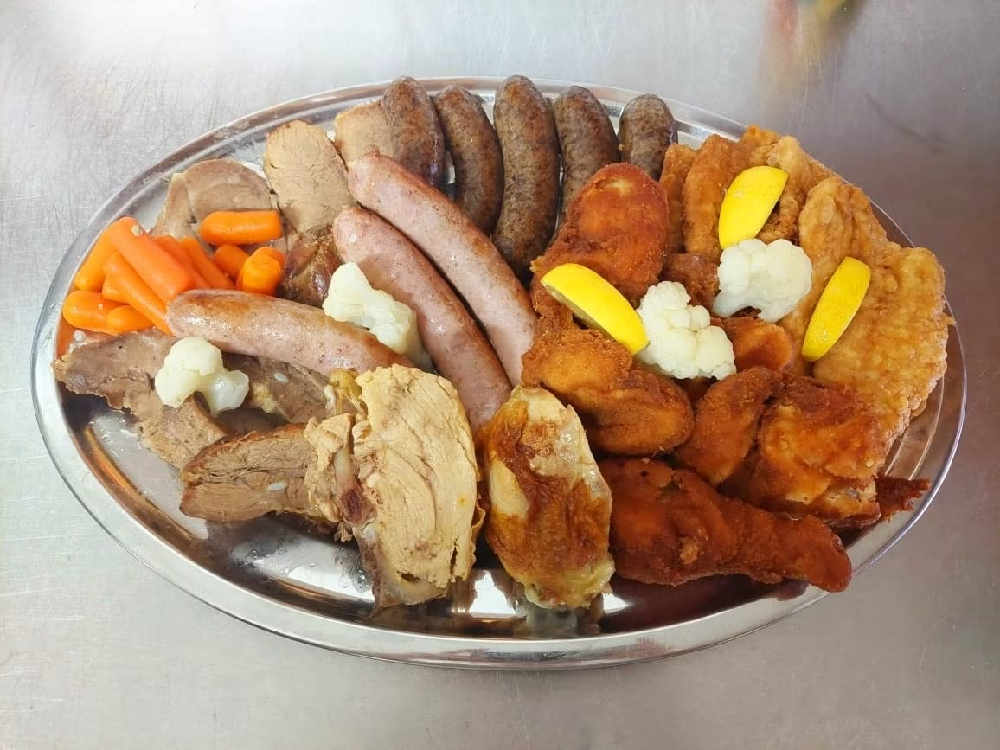
Pozimi
Koline in pečenice
Domače klobase in pečenice, ko zunaj zebe in se kuri peč.
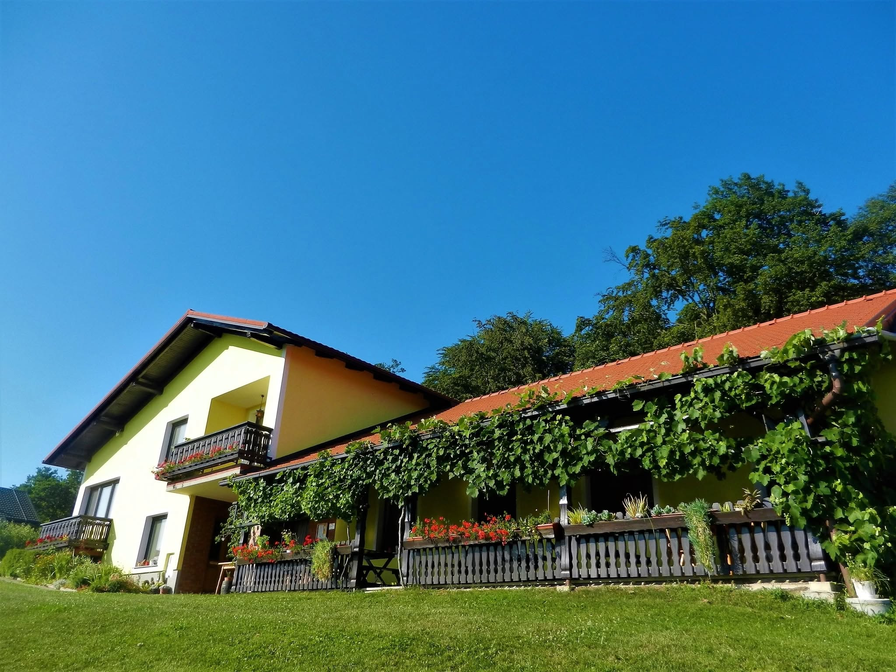
Domač narezek, tünka, kruh iz krušne peči in dobra vinska kapljica. Nedeljska kosila in praznovanja za do 50 gostov, med vinogradi nad Gornjo Radgono.
Ko se zjutraj zakuri krušna peč, cela hiša diši po sveži prleški gibanici in domačem kruhu.
Na naši kmetiji v Spodnji Ščavnici gostom postrežemo z jedmi, ki jih pripravljamo iz domačih sestavin: narezek, tünka, domače klobase in gibanica. Jeseni se vinogradi okoli nas obarvajo zlato, pozimi pa pri nas diši po kolinah. Pridite na oddih, kosilo ali praznovanje z najdražjimi.
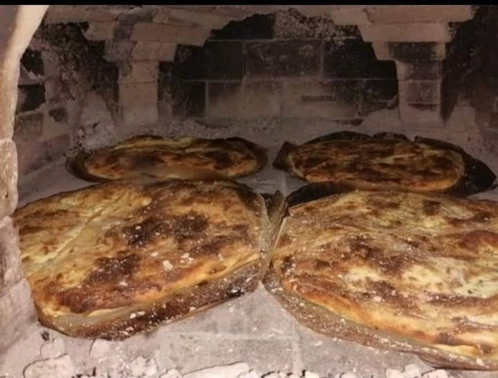
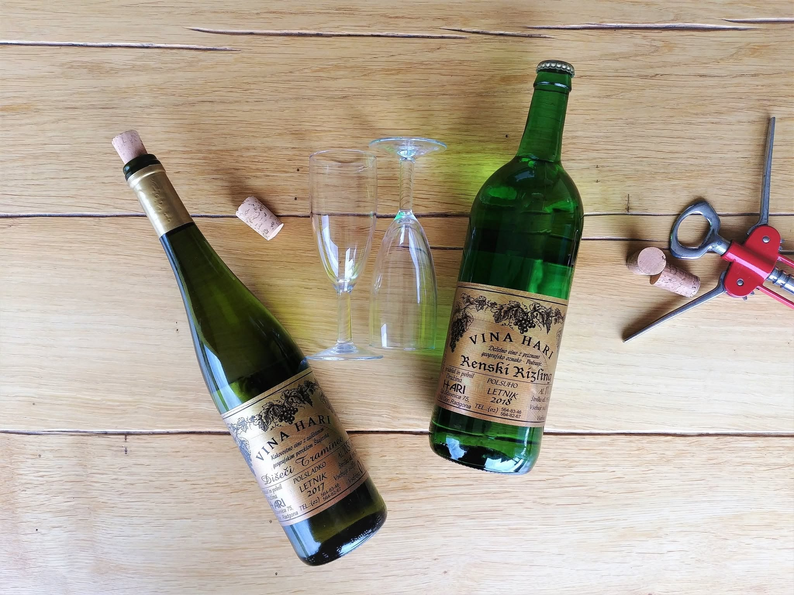
Vse, kar pride na mizo, je domače. Za večje skupine in nedeljska kosila nas pokličite vnaprej, da pripravimo vse po vaših željah.
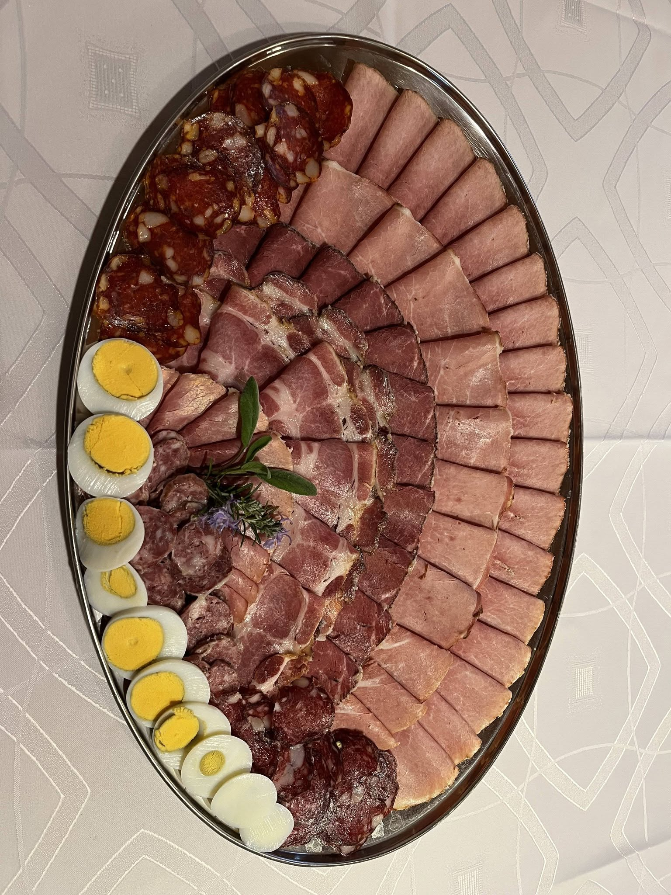
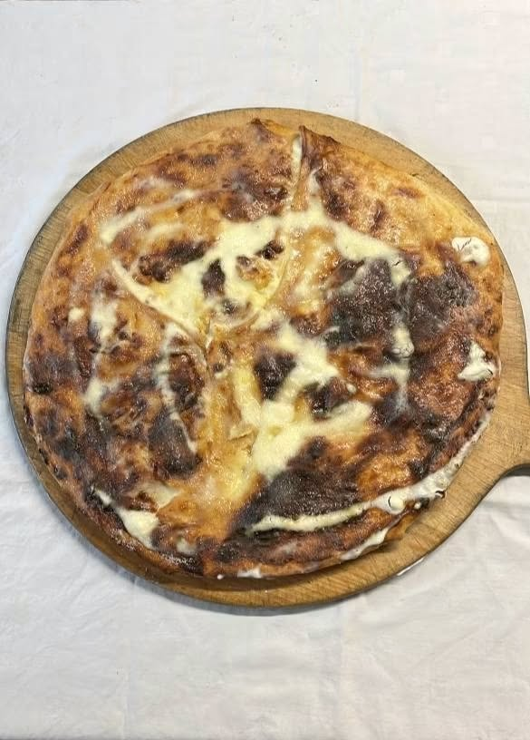
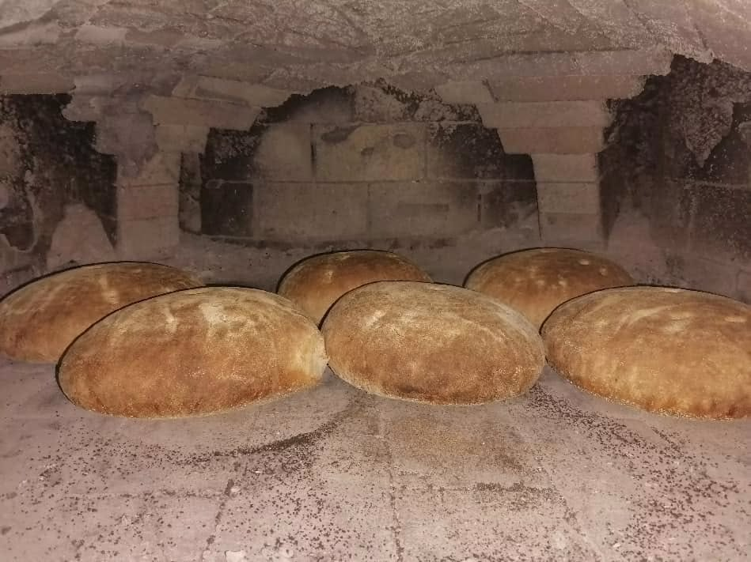
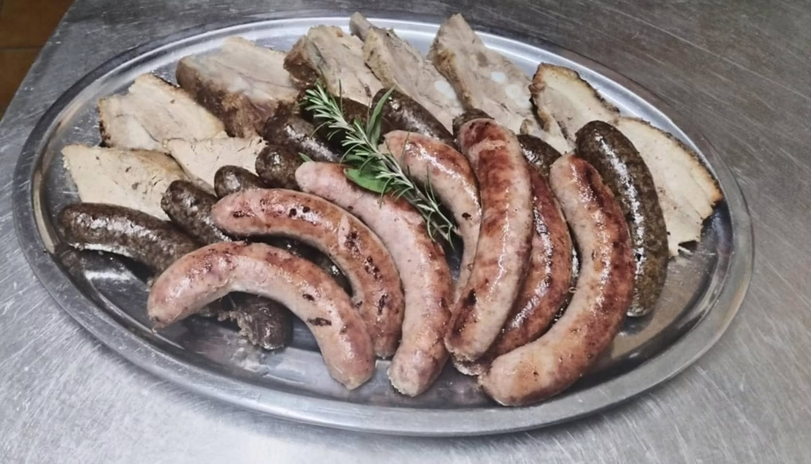
Nedeljska kosila pripravljamo po predhodnem naročilu. Cene so informativne in jih skupaj uredimo pred objavo strani.
Pri nas lahko praznujete z vsemi, ki so vam dragi. Poskrbimo za lepo pripravljene mize, domačo hrano in prostor, kjer se lahko brezskrbno družite.
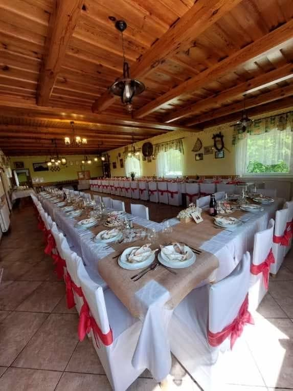
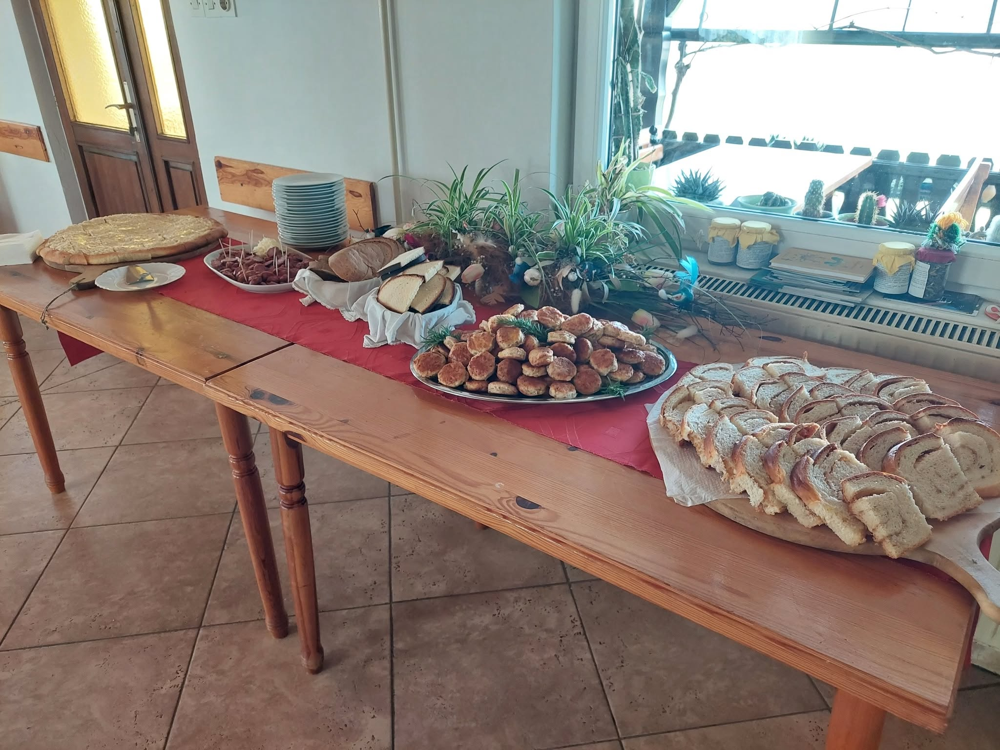
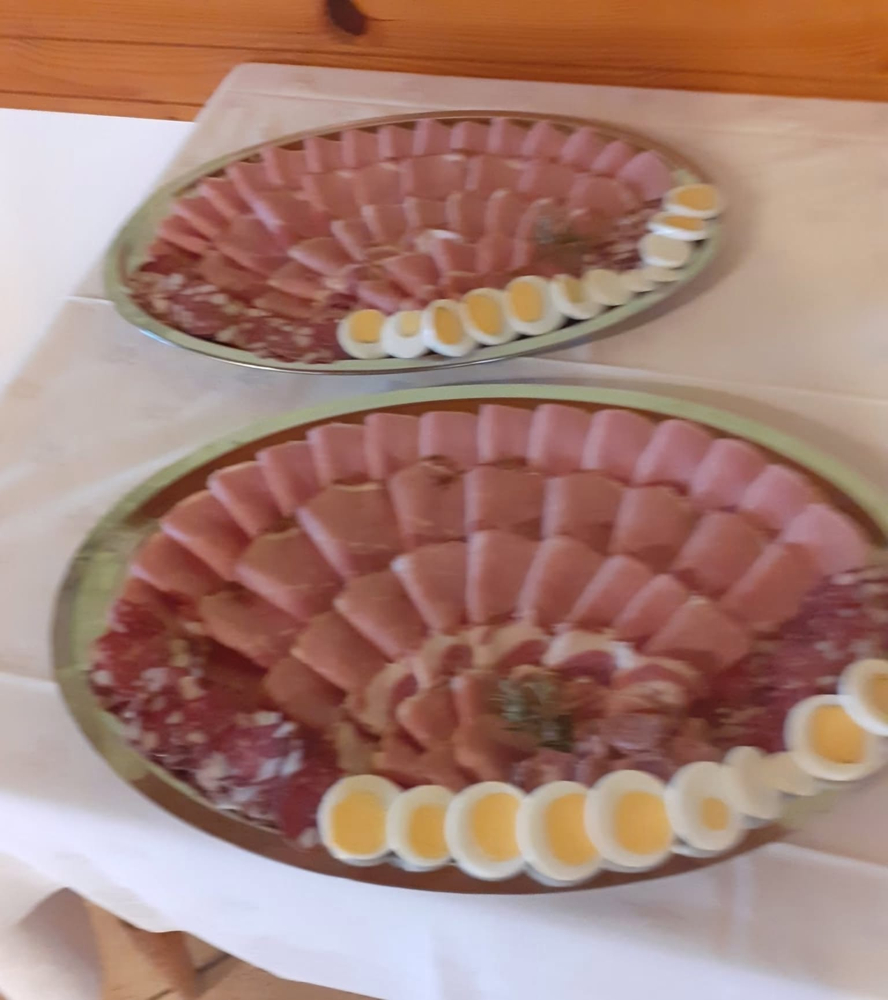
Dvorana s pogrnjenimi mizami, pripravljena po vaši želji: praznično, lovsko ali v naravnem slogu.
Narezek, gibanica in kosilo. Meni sestavimo skupaj, glede na priložnost in število gostov.
Ob lepem vremenu se druženje preseli na teraso, s pogledom na vinograde in sončni zahod.
Razgled in domač narezek, to je popoln recept za oddih po dolgem dnevu.Turistična kmetija Hari

Domače klobase in pečenice, ko zunaj zebe in se kuri peč.
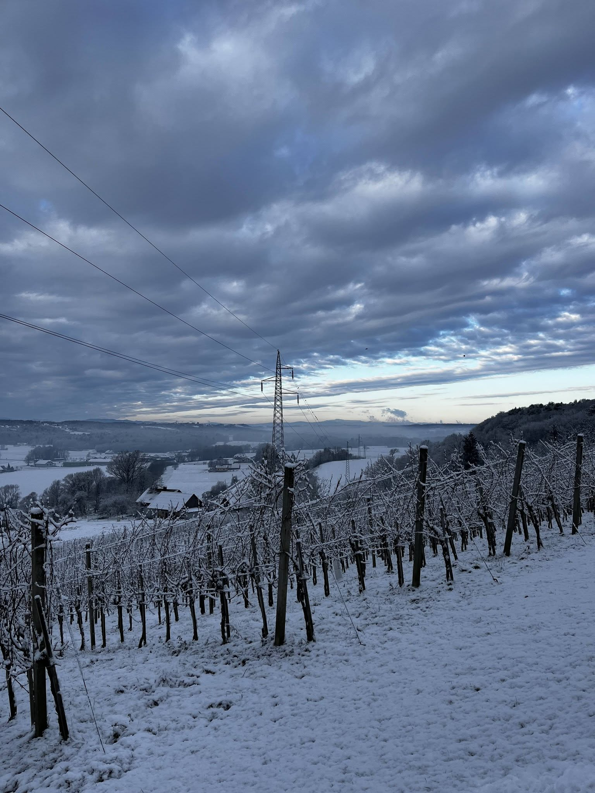
Griči nad Ščavnico, ki so lepi v vsakem letnem času, jeseni pa najlepši.
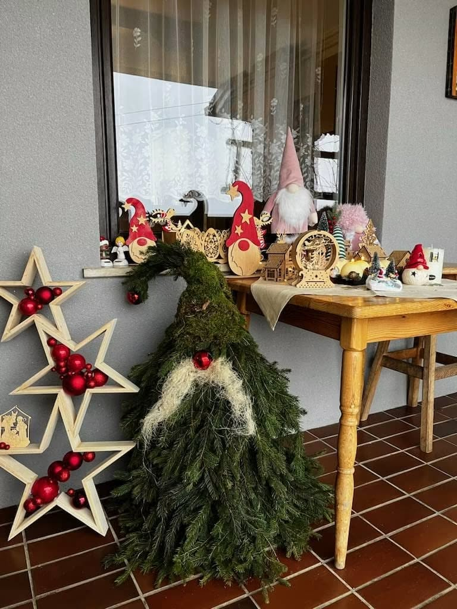
Krst mošta z domačim muzikantom in praznično okrašeni kotički.